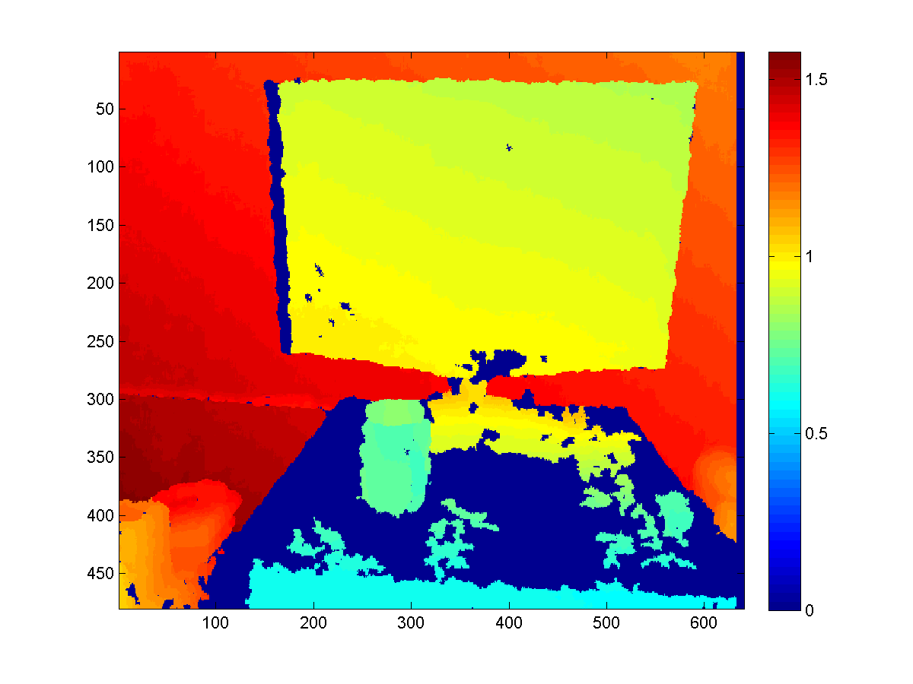
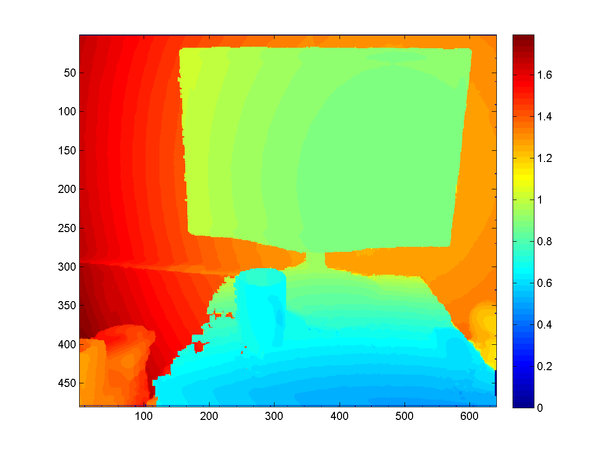
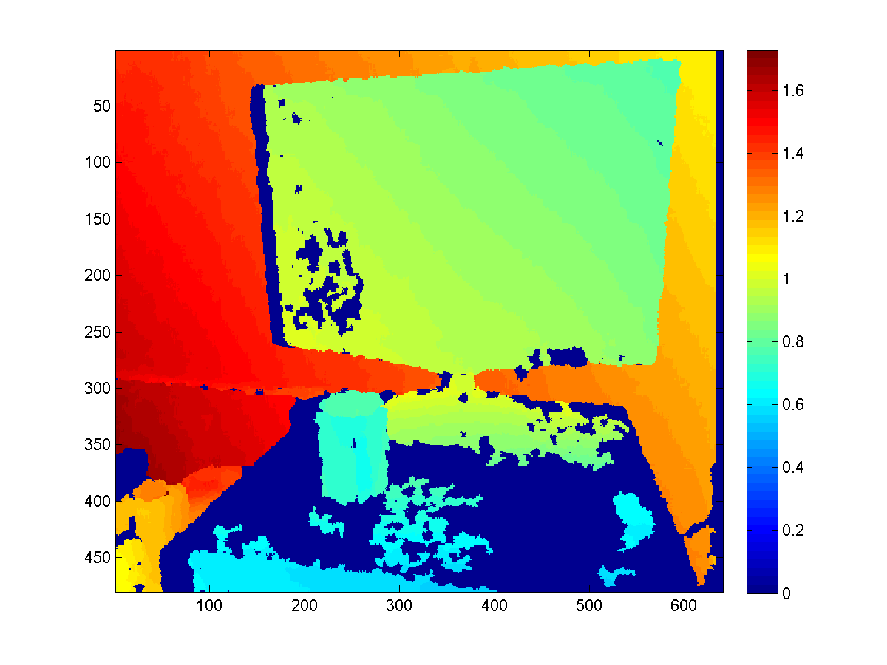
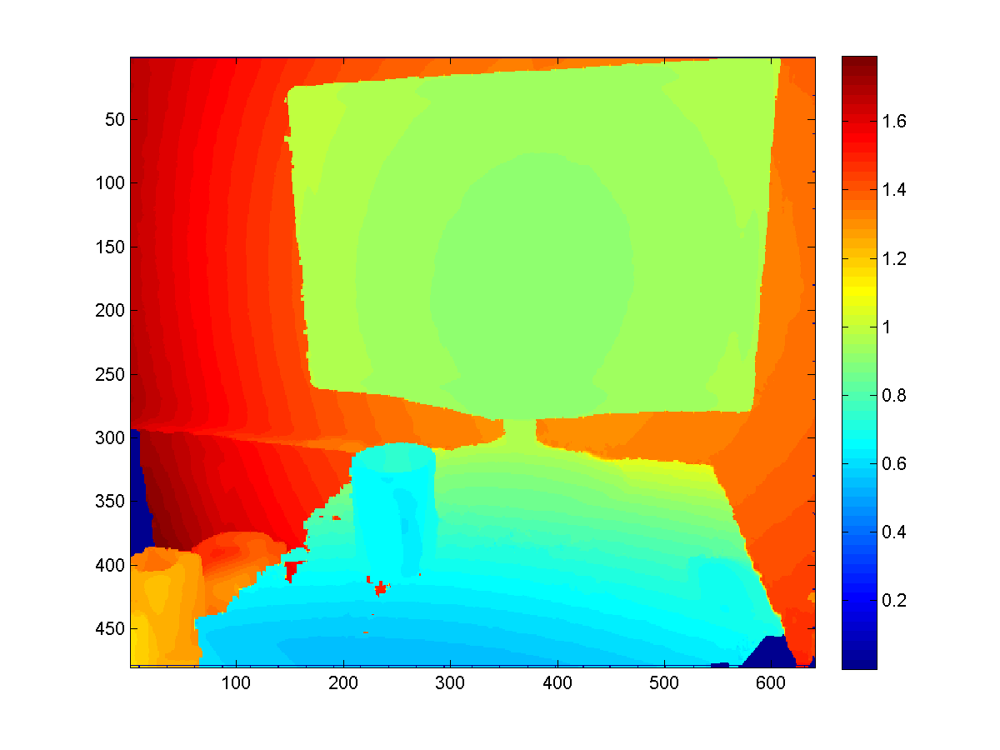
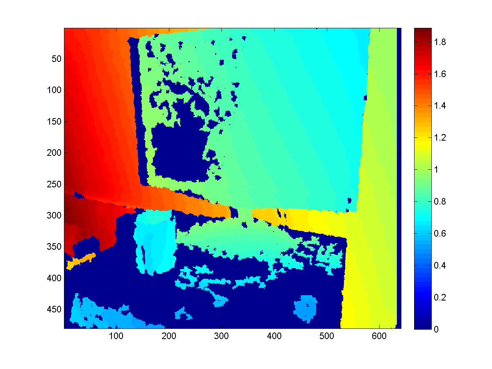
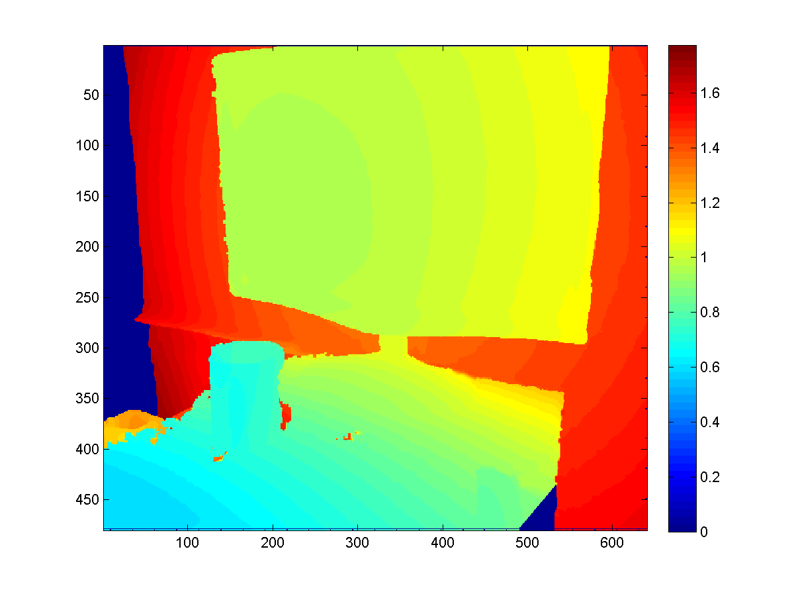

KinectFusion is a powerful 3D reconstruction technique based on Microsoft Kinect Sensor. It's included in the Microsoft Kinect SDK, which is pretty easy to use. But if you wish to do some serious vision applications based on that, more technical details need to be figured out. And here are some notes I took these days.
WorldToCamera matrix
Just as the name indicates, it's just the external parameter matrix of the camera (i.e. Kinect here), consisting of the rotation and the translation info.
You can get it from the GetCurrentWorldToCameraTransform() function in the SDK.
More specifically, the matrix looks like
$$\begin{bmatrix} R & t \\ 0 & 1 \end{bmatrix}.$$
And to transform a 3D point in the global coordinates to the local 3D coordinates of the camera, one only needs to do
$\begin{bmatrix} x_l \\ y_l \\ z_l \\ 1 \end{bmatrix} = \begin{bmatrix} R & t \\ 0 & 1 \\ \end{bmatrix} * \begin{bmatrix} x_g \\ y_g \\ z_g \\ 1 \end{bmatrix} $.
From the code it's also easy to know the (inverse of the) internal matrix of the Kinect (optical) camera (when the resolution is $640 \times 480$).
$F^{-1} = \begin{bmatrix} 594.21 & & 320 \\ & 591.04 & 240 \\ & & 1 \end{bmatrix}$,
then the (homogeneous) coordinates of the point can be computed as
$ \begin{bmatrix} u \\ v \\ 1 \end{bmatrix} = F^{-1} \begin{bmatrix} x_l/z_l \\ y_l/z_l \\ 1 \end{bmatrix} $
To verify the correctness of your implementation, simple export two RGBD photos with WorldToCamera matrices, manually label the same 3D point on the two depth photos, and see whether they get transformed to the same 3D coordinate.
RGB-depth alignment
In the previous verification experiment, the reason why we don't use optical photos to label is, direct export from Kinect SDK ends up with unaligned optical and depth photos. That is, since the optical camera and the depth camera are not in the position (and have different view of angles), their photos are not aligned, or the depth in (u, v) in the depth photo is not the "depth" for the pixel at (u, v) in the optical photo. To build applications involving both photos, you need to first align them, or in other words, warp the optical photo to fit the depth photo (or vice versa).
It can be done with the SDK itself, with the function CoordinateMapper.MapDepthFrameToColorFrame().
Since there are detailed documents in MSDN, I'd save time here by leaving yourself read the documents.
But the MATLAB code is provided here.
Some assumption to use the code is, the file imgfn stores the binary data directly exported from ColorImageFrame.CopyPixelDataTo(), dfn stores the binary data exported from FusionFloatImageFrame.CopyPixelDataTo(), and idxfn stores the binary data exported from the ColorImagePoints resulted from CoordinateMapper.MapDepthFrameToColorFrame().
Example exporting code would look like this:
var colorImagePoints = new ColorImagePoint[depthPixels.Length];
mapper.MapDepthFrameToColorFrame(DepthImageResolution, depthPixels, ColorImageFormat.RgbResolution640x480Fps30, colorImagePoints);
File.WriteAllBytes(string.Format("{0}_coloridx.dat", fn),
colorImagePoints.SelectMany(x =>
{
var result = new List<byte>();
result.AddRange(BitConverter.GetBytes(x.X));
result.AddRange(BitConverter.GetBytes(x.Y));
return result.ToArray();
}).ToArray());
With such alignment or rectification, we can repeat the experiment introduced in the last section with the optical photos now.
WorldToVolume matrix
The WorldToVolume matrix is pretty like WorldToCamera matrix, mapping the world coordinates to volume coordinates.
The comment in the SDK basically illustrate how the volume coordinate works, and it's as easy to use as the WorldToVolume matrix,
$\begin{bmatrix} x_v \\ y_v \\ z_v \\ 1 \end{bmatrix} = \begin{bmatrix} R & t \\ 0 & 1 \\ \end{bmatrix} * \begin{bmatrix} x_g \\ y_g \\ z_g \\ 1 \end{bmatrix} $.
Note the $t$ in the matrix may be negative, because it's not necessary to store info too close to the camera. And since the comment in the code mentions that the origin of the world coordinate system lies in the center of the front plane (i.e. z == 0 plane) in the volume, you may want to assign at least $2t$ space for the volume.
Raycasting for better depth
A smart way to use the KinectFusion is to extract depth map with better quality from the volume, rather than directly fetch it from the sensor. Since the Truncated Signed Distance Function smoothes the surfaces among frames it's seen before, such extracted depth map would be more robust to sensor noise and missing values (which is a common problem for Kinect sensor).
To extract such depth map, we need to first export the point cloud stored in the volume with the function CalculatePointCloud() (with the WorldToCamera matrix), and then map each 3D point to the camera imaging plane based on the external as well as internal matrices of the camera.
Here are some results to give you a sense.
 
 
 
Comments